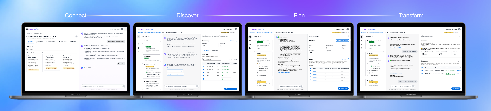
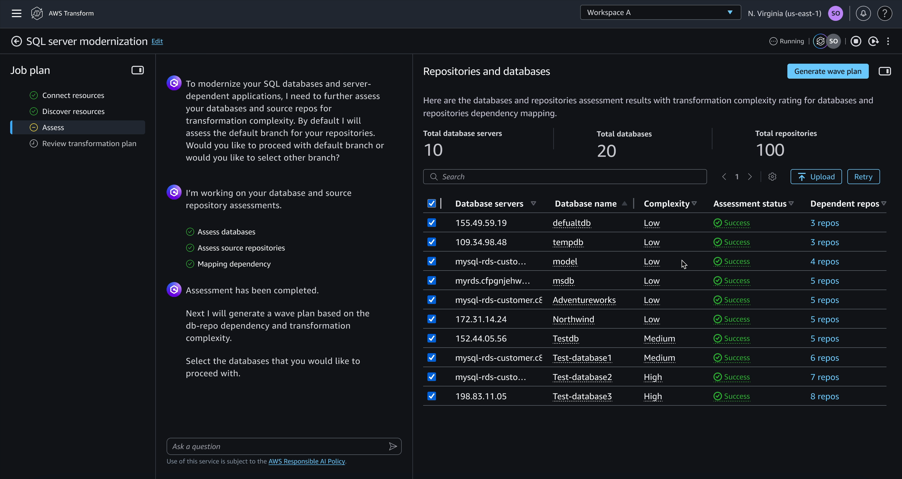
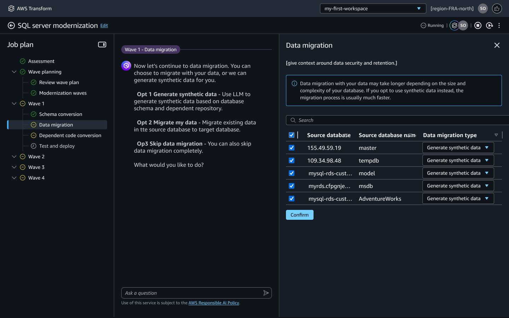
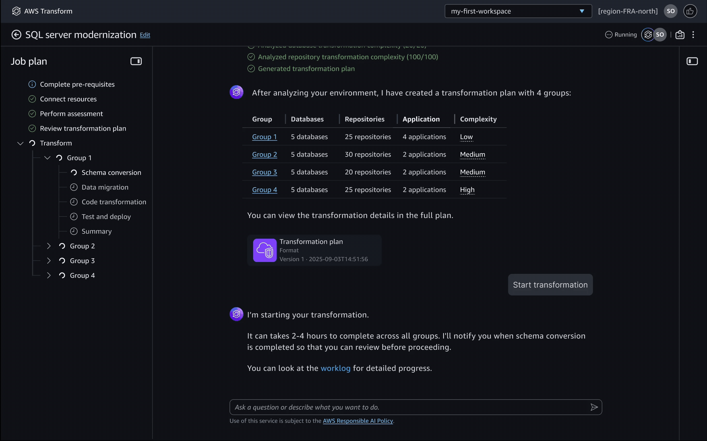
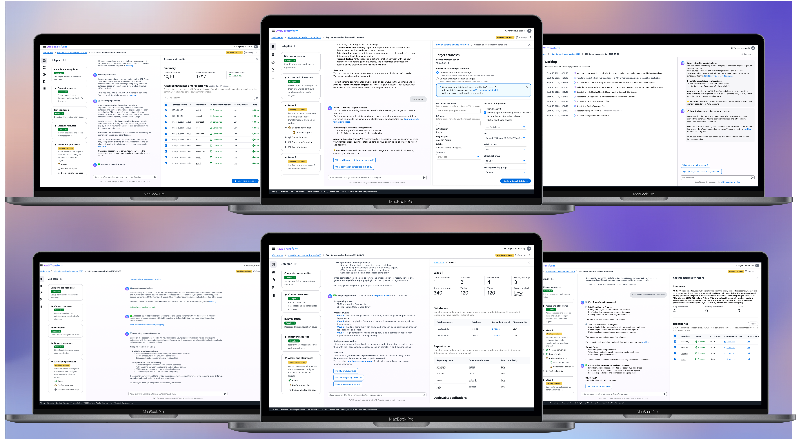
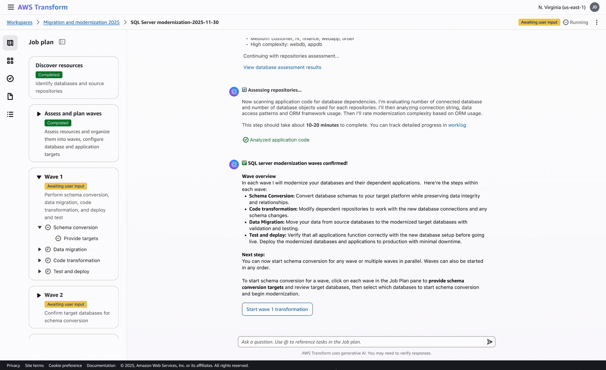
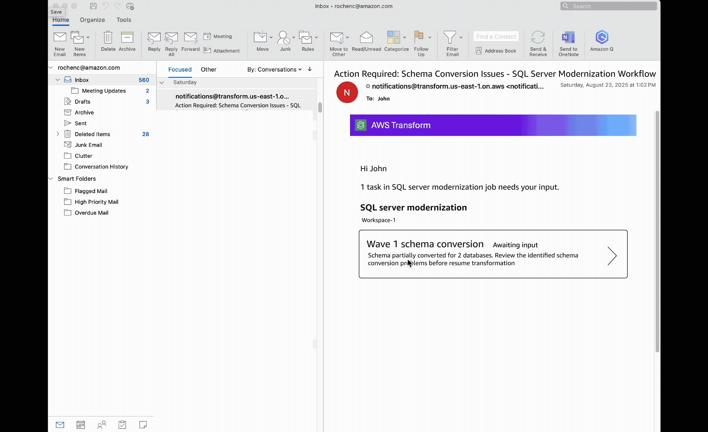

Accelerating SQL Server database modernization
AI-assisted cloud migration and modernization tool for full-stack SQL Server to Aurora PostgreSQL transformation
Summary
I led the UX design and research for Agentic SQL Server modernization workflow within AWS Transform to accelerate enterprise database modernization, launched at re:Invent 2025. As lead UX designer, I defined the conversational flow to guide user through the end to end modernization tasks. My impact lies in making the agentic AI-driven experience useful and usable, including defining human-in-the-loop moments, crafting chat content design, and making new AI-human interaction clear and intuitive.
View interactive demo
Impact
Since launching to AWS enterprise customers worldwide in December 2025, we've seen more than 46 customer-created jobs with a 20% job completion rate, reducing modernization time with the same scope from months to weeks. The solution has also eliminated SQL Server licensing fees and freed up significant developer time for higher-value work.
operating costs reduced by
acceleration across database layers
positive feedback on new chat framework
What is SQL modernization
SQL server database modernization is moving old Microsoft databases to cheaper cloud databases without breaking your applications.
Problem
Companies are still using legacy apps coded 20 years ago, costing them millions in licensing costs. When they make the decision to modernize, it's a hard journey ahead of them. 80% enterprise customers feel uncertain, anxious and lost when it comes to modernizing legacy apps. Modernization is hard due to a number of factors, most highlighting:
- Inaccurate assessment
- Poor planning
- Manual and error prone processes
- Lack of expertise
Designing for cross-functional team
Project Lead
Lead the modernization project, define approach, plan milestones, and coordinate across team
Database Engineer
Works on each database's schema conversion, fix unconverted schemas, validate and test results
App Dev
Needs to ensure apps work correctly during modernization. Help identify app-db dependencies
AWS Admin
Provide necessary access to company's cloud environment
Modernization journey
SQL Server to PostgreSQL modernization is a critical but daunting initiative for enterprises. Traditional approaches take months of manual work and require deep technical expertise across databases, applications, and infrastructure.
Connect
Assess
Plan
Modernize
Problem
Lack of expertise in setting up secure connections to legacy systems.
Problem
Identifying dependencies on repositories is challenging—without this, modernizing SQL will break applications.
Problem
Complex wave sequencing and resource allocation across teams.
Problem
90% schema conversion will still require manual conversion, even with automation tools.
AI Capability
Guided connector setup with authentication management.
AI Capability
AI-powered schema analysis and dependency detection at scale.
AI Capability
Intelligent wave planning with risk assessment recommendations.
AI Capability
Automated conversion with human-in-the-loop oversight.
Problem
Challenge
How might we guide users through a SQL database modernization journey with clarity, confidence and control—interacting with multiple AI agents?
Hallucination & inconsistency
Ensuring agents provide reliable, accurate results when handling complex database analysis and transformation logic.
Trust and transparency
Helping users understand why agents make recommendations and how they arrived at their conclusions.
Refinement
Allowing users to review, modify, and improve agent outputs before execution to maintain control and quality.
Process
To mitigate the challenge of designing highly technical workflows, I worked through quick mockups, PM-eng-UX sync-ups, technical SA feedback and reviews, then validated with 15+ customers, and continue improvement with feedback from 40+ participants in GA bugbash.
I also used vibe coded prototypes to deal with the lack of time to prep for prototype testing—generating various iterations quickly, especially for the wave plan page layout.
Define the conversational flow
One major ask was to update the old GA framework. I worked closely with platform team to define a new chat centric experience with the 3 panel framework to ensure database modernization users can efficiently interact with AI agents to assess, plan and transform their database and applications:
- Job plan pane: Shows the sequential steps of the modernization workflow
- Chat pane: Primary interface for conversing with AI agents
- Human in the loop panel: Displays key decision points requiring user review and approval
Testing out the experience
To test out the new conversational flow, I conducted 10 user testing sessions on the private preview design. The goal was to get feedback on both functionality and user experience. The results showed that users were excited about the new chat-centric experience, but also expressed concerns around needing finer control and a more efficient way to interact with the agent. We also learned that some of our assumptions about the desired degree of automation were wrong.
Assessment result should be emphasized over grouping
Research showed users need to review assessment first to fix dependency errors before planning. V2 separates these steps, giving users control to verify agent output before proceeding.

In V2, users can see detailed rich info about assessment for each of their resources prior to grouping them.
Configure by step to provide control
Targets for each wave steps is configured after the last step is done, to break down the complexity and reduce uncertainty for this task. This enables different teams to work on each wave concurrently, with different personas working on database, app, and deployment. The outcome of schema conversion may change data migration configuration, and this approach provides more transparency about pricing and cost implications.

User prefer to configure target databases and applications for each step within every wave, providing granular control but requiring more manual input.
Monitor progress directly in job view
I explored real-time status indicators to keep users informed of long-running migration tasks, providing visibility into AI agent progress and potential issues. Users need a persistent, convenient place to monitor progress without switching to the worklog page. Allow them to check agent progress easily.

Widget concept explored to show agent progress while enabling chat.
Final result
A guided streamlined experience that enables cross-functional teams to collaborate and automate transformation from end to end.

Rich assessment information
Layered information architecture from chat summaries to detailed data tables to drill-down views.


Edit waveplan using chat
Chat handles intent capture, explanations, and quick plan edits, while UI manages structured data, dependencies, bulk operations, and validation.

Configure with control
Contextual editing enables users to modify wave plan configurations directly within context, reducing navigation overhead and improving workflow efficiency.

Contextual alert for transformation results
Real-time notifications keep users informed of transformation status and guide them to address issues promptly.

Future improvements
From discussions with SAs and customers, I have identified a few areas of improvement to enable more flexibility and connection, and a more efficient experience for troubleshooting.
- More dynamic workflow—go back and add resources/change plan, retry a step
- Schema conversion issue resolution in IDE
Other Projects